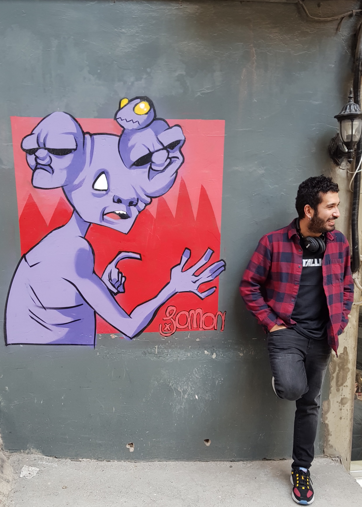

tiyatro/sinema sever, bisiket aşığı, sağlam metal dinleyicisi, bilim tutkunu, etkinlik meraklısı, fazlaca meraklı, biraz da fazla konuşan, tüm bunlara ek olarak proje geliştirmeyi, yeni teknolojileri keşfetmeyi çok seven bir, insan.
Yazılımın ilgimi çekmesi öncelere dayanıyor, ms-dos komutlarını tek tek deneyerek başlamıştım bu olaya.(sonrasında mavi ekranları, hal.dll bulunamadı vb’leri göz ardı edersek güzel günlerdi :) )
Günümüze doğru geldikçe merakım daha fazla arttı. İlk olarak asp başladım bu sürece. Ozamanlar aspindir.com sayesinde projeler indirip gece gündüz demeden kafa patlatıyodum. Internette doğru düzgün kaynak olmaynıca böyle oluyor tabi. Sonuç olarak Web’e bu şekilde giriş yapmış oldum.
Üniversitede artık bodoslama yazılmayacağını anladığım zamanlara denk geliyor. OOP kavramı, Design Pattern, … derken kendimi farklı bir olayın ortasında buldum. Hemen ısındım ve artık zevk vermeye başladı yaptığım işler :)
Frontend veya Backend olarak görmek istemediğim zamanlara geleyim biraz. Tam olarak bu sebepten iki tarafa da eşit miktarda uğraşmaya karar verdim. Bu karardan sonra artık prokelerin her tarafıyla ilgilenmeye başladım.
Ne kadar uğraşsamda teknoloji çok hızlı ilerlediği için tamam bunu öğrendim dediğim şeyin yerine daha iyi çıkıyordu, bu biraz moral bozmuyor değildi tabi. (Silverlight gibi olabilirdi mesela sonu :)
Kendimi geliştirdikten sonra belli konularda artık C# yazmak istemediğime karar verip Java ve Python’a geçtim. Frontend tarafında ise jQuery’den Vanilla js’ e buradan da React ve Vue.js ‘e geçtim. ES6 bunda büyük bir etkiye sahip.
Biraz uzadı yazı o yüzden bitiriyorum hemen :)
Full Stack olarak projeler geliştirmek istesemde, Deep Learning ve Data Science alanlarına özel bir ilgim var ileride bu alanlarda çalışmak istiyorum.